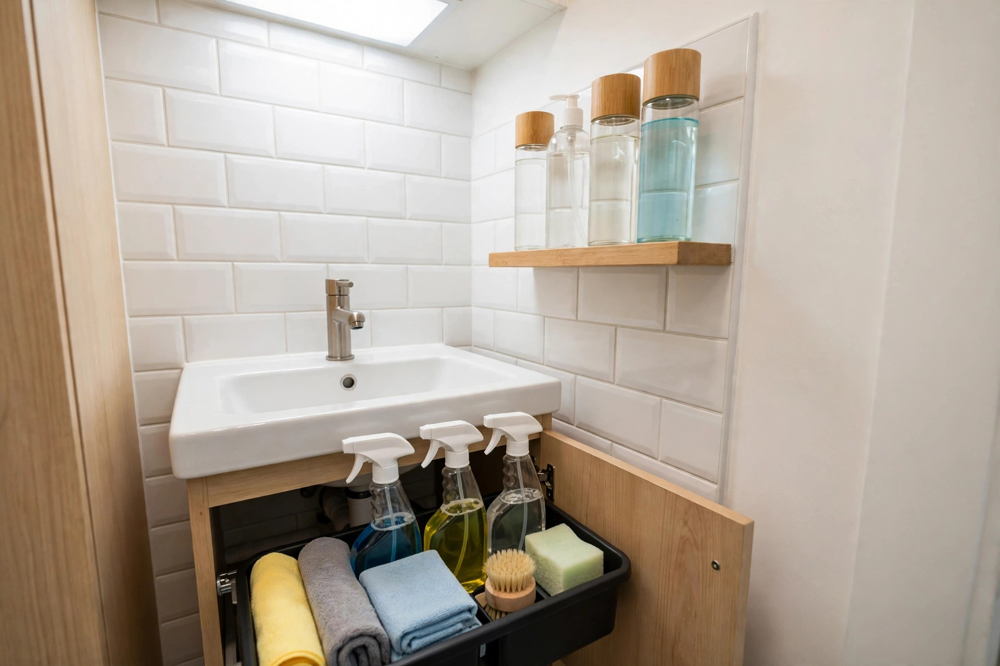

Small Space Storage & Organisation
Small Apartment Cleaning Supplies Storage Ideas Under $20
Intro
Cleaning supplies in a small apartment end up everywhere: under the kitchen sink, on top of the washing machine, behind the bathroom door, in a bag by the front door. When they have no home, cleaning takes twice as long — half the time is spent finding the spray. When they have one home, cleaning is a five-minute job.
This guide has 12 cleaning storage ideas under $20 — one caddy, door racks and under-sink bins. Each idea lists what it costs. The rule is simple: everything you use every week lives in one caddy, and everything else lives in one cupboard.

1. One caddy for everything you use weekly — $8–$12
A caddy with a handle holds the five things you use every week: all-purpose spray, cloths, a sponge, washing-up liquid and a bin bag roll. It costs about $10. Carry the caddy from room to room, and put it back in its place when you finish. One caddy means no more searching three cupboards for one spray.
2. Under-sink bins — $8–$12
Two small bins under the kitchen sink hold the rest: the floor cleaner, the oven spray, the spare cloths. Two bins cost about $10. One bin for sprays, one bin for cloths and sponges — pull the bin out like a drawer, take what you need, push it back. Measure under the sink first, so the bins fit around the pipes.
3. An over-door rack in the cleaning cupboard — $10–$15
An over-door rack on the inside of a cupboard door holds spray bottles upright, using space that was completely empty. It costs about $12. Bottles stored upright do not leak, and you can see every label at a glance. Keep the heaviest bottles on the lowest row, so the rack stays stable.
4. A tension rod under the sink — $5–$8
A tension rod wedged across the inside of the sink cupboard holds spray bottles by their triggers, hanging in a row. One rod costs about $6. The bottles hang above the bins below, so the cupboard holds twice as much. It takes two minutes to fit and no screws at all.
5. A hook for the dustpan and brush — $3–$5
A dustpan and brush leaning in a corner fall over and get lost. One adhesive hook on the inside of a cupboard door holds them upright. A hook costs about $4. Hang the brush beside the dustpan, and the pair is always together. The same hook holds a small hand brush in the kitchen.
6. Cloths rolled, not folded — $0
Roll cleaning cloths instead of folding them, and stand them upright in a small box or a jar. Rolled cloths take less space, and you can see every colour at a glance — one colour per room, so the bathroom cloth never cleans the kitchen. A jar or a small box costs nothing if you use one you already have.
7. A bathroom caddy for bathroom cleaning — $6–$10
Bathroom cleaning supplies live in the bathroom, not in the kitchen. A small caddy under the bathroom sink holds the bathroom spray, the toilet cleaner and a cloth. It costs about $8. Keeping bathroom supplies in the bathroom means cleaning the bathroom is a two-minute job, not a trip across the flat.
8. Labels on every bottle — $0–$3
When bottles are decanted into smaller spray bottles, label them: what is inside, and what it is for. A marker and tape cost about $3. Labels stop you from spraying oven cleaner on a mirror, and they stop guests from guessing. Keep cleaning products away from food, and never mix them.
9. A small shelf above the washing machine — $10–$15
A small shelf above the washing machine holds detergent, fabric softener and stain remover where you use them. One shelf costs about $12. Keep only laundry things on this shelf — cleaning sprays belong in the caddy. A shelf with a raised edge stops bottles from vibrating off during a spin cycle.
10. A bag for the vacuum attachments — $5–$8
Vacuum attachments — the crevice tool, the brush, the upholstery head — get lost in the back of cupboards. A small bag hung on a hook beside the vacuum holds them all. A bag costs about $6. When the attachments live with the vacuum, vacuuming takes one grab instead of a search.
11. A monthly check: use it or lose it — $0
Once a month, check the cleaning cupboard: anything half-empty and unused for three months goes out. Cleaning products expire, and an old bottle takes the place of a useful one. A monthly check takes two minutes and keeps the cupboard to the products you actually use. Buy small bottles in a small flat — big bottles are false economy when there is nowhere to store them.
12. Keep it safe: high, locked, labelled — $0
Cleaning products must be out of reach of children and pets. Keep them in a high cupboard or a cupboard with a child lock, and never decant them into food or drink bottles. Safety costs nothing, and it is the most important rule in this whole guide. If a cupboard cannot be locked, keep the products on the highest shelf.
Conclusion
Cleaning storage is one caddy, two bins and a door rack — about $20 in total. Everything you use weekly lives in the caddy, everything else lives under the sink, and the whole flat can be cleaned without a search. Start with the caddy today, and the next clean will take half the time.
Budget recap
- Caddy + cloths: ~$12 - Under-sink bins + tension rod: ~$16 - Over-door rack: ~$12
Total for a cleaning storage setup: under $20 — or ~$10 with a caddy alone.
Pinterest pin titles
- Small Apartment Cleaning Supplies Storage Ideas Under $20
- 12 Cleaning Storage Ideas — One Caddy, No More Searching
- Cleaning Supplies Everywhere? 12 Storage Ideas Under $20